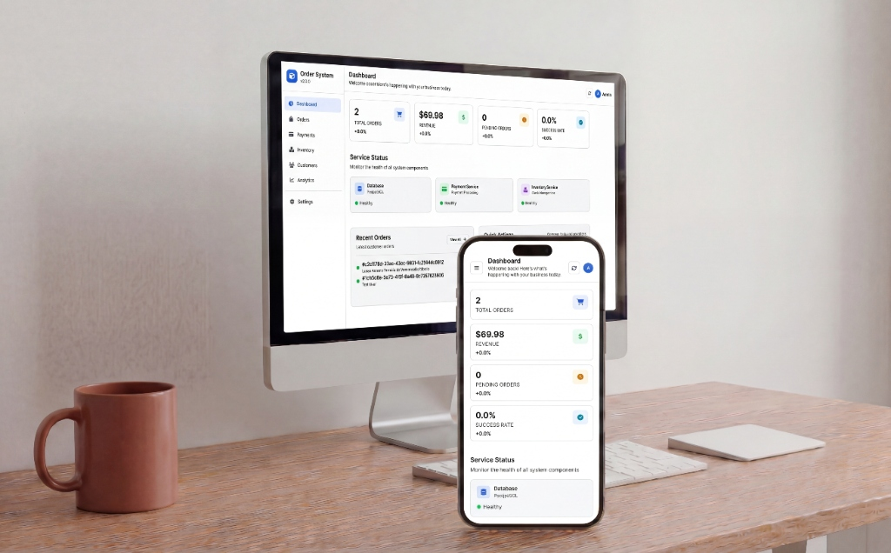

Gestão de Pedidos Distribuído
Pedidos, estoque e pagamento com outbox e compensação

- Arquitetura
- Monólito modular por domínio
- Mensageria
- Outbox + RabbitMQ
- Testes
- 217 testes · 63,3% de cobertura de linhas
- Extras
- Testes E2E e teste de carga
Visão geral
Sistema de gestão de pedidos que cobre todo o ciclo operacional: autenticação, criação do pedido, reserva de estoque, processamento de pagamento, confirmação/cancelamento, painel operacional e trilha de eventos.
O problema resolvido é o típico de plataformas transacionais: evitar venda sem estoque, manter o fluxo de pagamento integrado ao pedido, reduzir acoplamento entre módulos e dar visibilidade operacional.
Nota de honestidade arquitetural: apesar do nome do repositório sugerir Event Sourcing e microservices, o runtime ativo hoje está consolidado em um monólito modular bem estruturado. Isso não diminui o projeto — apenas muda a forma correta de apresentá-lo.
Arquitetura
Monólito modular por domínio, com módulos separados e comunicação assíncrona via outbox → RabbitMQ. O núcleo ativo foi consolidado a partir de uma fase anterior mais fragmentada.
-
orderCasos de uso do pedido (CreateOrderUseCase, CancelOrderUseCase) e OrderBusinessRules. -
inventoryReserva e liberação de estoque, com locking otimista e pessimista. -
paymentProcessamento de cobrança via gateway HTTP ou sandbox local. -
auth / websocketAutenticação JWT com RBAC e notificações em tempo real. -
infrastructureEventPublisher, DomainEventEntity e DomainEventOutboxPublisher.
Fluxo de criação de pedido com compensação
- O usuário autentica e recebe um token JWT.
- O frontend chama a API de pedidos; o backend valida a requisição e executa o
CreateOrderUseCase. - O módulo de estoque verifica disponibilidade e cria uma reserva para evitar overselling.
- O módulo de pagamento processa a tentativa de cobrança via gateway ou sandbox.
- Se tudo der certo, o pedido é confirmado. Se estoque ou pagamento falharem, o fluxo executa compensação e atualiza o estado do pedido.
- Eventos de domínio são persistidos em tabela própria — não é fire and forget direto para o broker.
- Um publisher de outbox envia os eventos pendentes ao RabbitMQ.
- Um scheduler trata a expiração automática de reservas, evitando estoque preso indefinidamente.
Pontos fortes
- Domínio forte para mercado enterprise: pedidos, estoque e pagamento coordenados.
- Preocupação concreta com consistência e concorrência, incluindo locking otimista e pessimista no estoque.
- Uso real de mensageria com RabbitMQ e padrão Outbox.
- Segurança acima da média: JWT, RBAC, CORS, CSP, HSTS e rate limiting.
- Suíte de testes robusta: 217 testes sem falhas, 63,29% de cobertura de linhas via JaCoCo.
- Existência de testes E2E e teste de carga, incomum em portfólios.
Limites e decisões conscientes
O que este projeto não faz, e por quê. Descrever isso com precisão vale mais do que exagerar o escopo.
- Não é um conjunto de microservices independentes ativos, apesar do nome do repositório.
- O Event Sourcing não é aplicado de forma completa no runtime atual — o que existe é outbox de eventos de domínio.
- A pasta
legacy/mantém artefatos de uma fase anterior mais fragmentada, o que reduz a clareza do repositório. - A cobertura de branches (40,84%) é bem menor que a de linhas.